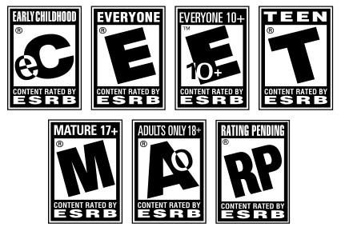

中国电影有着“老少皆宜”的传统，所以没有电影分级制度。为了让所有的电影都遵循统一规则，所以有的时候一些电影的特色可能就得不到较好的体现。电影的分级制度的确可以让电影行业变得更为系统，同时也可以让电影的分类更为科学，这也就在一定程度上控制了某些电影对青少年的不利影响。但另一方面看来，现在是一个互联网普及的时代，资源共享的范围越来越广，即使电影有了分级制度，但是也不能保证被未成年人禁止观看的电影不会流入到未成年人的手中。所以按照统一规则在一定程度上从源头避免了不适宜未成年人观看的电影的传播。这也就是中国电影制度与西方的不同之处。这也是外媒不理解中国电影审查制度的地方。在经济学人中，这种对于中国电影没有分级制度的疑问和评判出现了不止一次。这种差异的原因一是来自于中西文化的不同，二是来自于中外意识形态的不同所导致的制度不同。
在电影审核中，对待暴力镜头和性行为镜头的审核体现了一种不平等的特性，对于性行为的镜头的审核可能更为严格一些，这也与电影行业的特点和传统有关。所以在电影剪辑方面可能会存在一些外国电影界所不能接受的观点。中国电影制度在一定程度上也要符合社会主义核心价值体系，这是体现精神文明的需要。中国电影制度与西方相比确实还存在着不足之处，主要原因则在于中国电影仍处于发展阶段，对于制度的建立和完善仍未完成，这其中需要不断的摸索和磨合。
